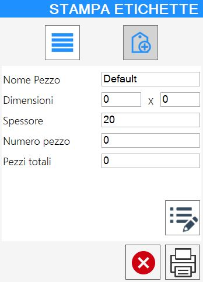

Questa funzionalità consente all’operatore di generare etichette sul pezzo prima di premere il pulsante PGM.
/6.4_b-20250827-084629.png)
Pulsanti
All’interno della barra inferiore della schermata principale di Parametrix, si trova il pulsante per accedere alla funzionalità etichettatura.
/StampaOffOn-20250827-072235.png) | Etichettatura |
|---|
Esistono due modalità distinte di etichettatura, illustrate di seguito.
Modalità Etichettatura Base
La modalità base mette a disposizione dell’operatore tre possibili modalità di etichettatura nel relativo pannello.
/2.0-20250826-150126.webp)
Etichettatura nell’area di lavoro | |
/2.2_Off-20250827-073135.png) | Etichettatura da lista dei pezzi |
/2.3_Off-20250827-073207.png) | Etichettatura con inserimento manuale delle informazioni |
Etichettatura nell’area di lavoro
La selezione di almeno un pezzo nell’anteprima visibile a schermo e la successiva pressione di questo pulsante innesca il seguente avviso:
/2.1.1-20250827-080436.png)
Etichettatura da lista dei pezzi
Questa modalità permette di selezionare i pezzi per cui si desidera applicare la stampa delle etichette.
Verrà aperto un piccolo pannello simile a quello rappresentato di seguito:
/4.2-20250827-080840.png)
/StampaOff-20250826-150011.webp) | Stampa etichette |
Etichettatura con inserimento manuale delle informazioni
Questa modalità permette di gestire le informazioni delle etichette e le relative proprietà aggiuntive.
Verrà aperto un piccolo pannello simile a quello rappresentato di seguito:

/z9-20250827-115244.png) | Proprietà aggiuntive |
|---|
Proprietà aggiuntive stampa etichette
In base alle proprietà aggiuntive opportunamente settate è possibile gestire le proprietà aggiuntive nel seguente pannello.
/5.4-20250827-081121.png)
I seguenti pulsanti consentono all’operatore di gestire rapidamente le proprietà aggiuntive:
/5.4.1_b-20250827-082447.png) | Copia proprietà aggiuntive |
/5.4.2_b-20250827-082505.png) | Incolla proprietà aggiuntive |
Modalità Etichettatura Avanzata
Questa modalità, come per la precedente mette a disposizione dei pulsanti per eseguire l'Etichettatura nell’area di lavoro e l'Etichettatura da lista dei pezzi.
/3.0-20250826-150132.webp)
Nella lista dei pezzi visibile a sinistra viene riportata una sola occorrenza per ogni pezzo.
Nella parte restante della finestra invece è visibile un’anteprima dell’etichetta attualmente selezionata.
/6.7-20250827-111816.png)
Nella parte inferiore di questo pannello sono messi a disposizione dell’operatore i seguenti pulsanti:
/checkboxMulti_On_-_Copia-20250827-095341.png) | Attiva/Disattiva selezione multipla |
/SelezionaTutto_OffOn-20250827-095515.png) | Seleziona tutti gli elementi della lista |
Stampa etichette in Apri stato
Una volta generato il PGM, è possibile procedere con la stampa delle etichette corrispondenti accedendo alla sezione "Apri Stato", situata nella parte inferiore destra della finestra. In questa fase, le quotature vengono aggiunte automaticamente al disegno.
/6.4_d-20250827-085035.png)
Premendo il pulsante di ‘Stampa Etichette’ verrà visualizzato il seguente pannello che permette di selezionare le etichette che si desidera stampare.
Sul lato sinistro del pannello sono riportati tutti i pezzi presenti nello stato selezionato, anche se ripetuti.
Nella parte restante della finestra viene visualizzata un’anteprima dell’etichetta attualmente selezionata.
Si consiglia di utilizzare un formato etichetta di dimensioni adeguate (es. 20 cm x 10 cm) per garantire una corretta leggibilità del disegno quotato.
/6.5_b-20250827-094743.png)